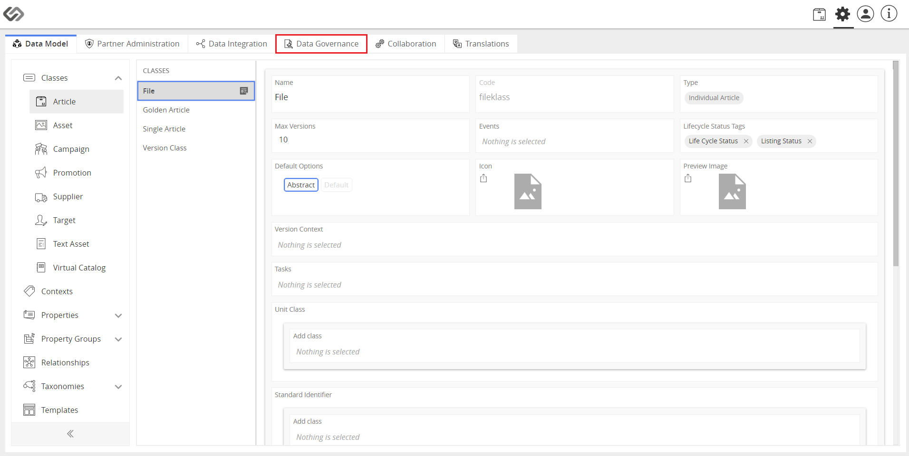

Standardize Product Definitions
Standardize Product Definitions is a data governance feature that standardizes the product definitions, which results in improved consistency of product definitions in the system.
| Key Term: |
- Data Governance: an approach to managing a company’s data assets. It defines who is accountable for various aspects of an organization’s data as well as including procedures which define how the data is used, structured and stored. This includes data quality rules and KPIs through the Dashboard.
|
| Description: |
- Standardization and Normalization take into consideration various errors that may occur during data entry and introduce appropriate measures to correct it.
With this feature, the user is able to normalize different values entered for a particular value.
- A rule can be defined to normalize different values entered for the articles.
- Within multiple tags/attributes, there is an ‘OR’ condition while for multiple tags/attributes, there is an ‘AND’ condition.
|
| Related topics: |
|
| Application: |
Rules can be made to normalize or standardize a tag based on certain attributes for the product.
There can be certain attributes, whose values are based on the selection of tag or attribute contents.
Example:
The attributes for Contents in any food product will contain the information about the ingredients.
A tag needs to be normalized based on allergen information like Contains Lactose or Contains Nuts.
|
How-to: Standardize Product Definitions
To standardize product definitions, follow these steps:
- Log in and click on the Administration button.

- Click on the Data Governance tab.

- Click on Rules then click on the “+” icon to create a rule.

- Enter the name and select Standardization and Normalization as rule type then click on the Create button.
- Select the Partners and Physical Catalogs to which the rule is to be applied.
- In the Cause section, select the attributes and tags that violate the rule.
- Select the condition by which the rule is violated.
- Select multiple conditions if necessary.
- Select the class to which the rule will be applied.
- In the Effect section, select the attributes and tags to be normalized.
- Click on the Save button to save the rule for the selected attributes and tags. For classes and taxonomies, the rule gets saved upon selection.